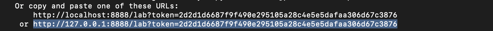

Versuchsaufbau¶

Im Rahmen dieses Praktikumsversuches sollen analoge (zeitkontinuierliche) und digitale (zeitdiskrete) Filter realisiert und ihre korrekte Dimensionierung mittels unterschiedlicher Meßverfahren überprüft werden. Die Realisierung der analogen Filter erfolgt durch aktive RC-Schaltungen anhand eines „Filter-Baukastens“, die digitalen Filter werden nach Eingabe der berechneten Koeffizienten hier in diesem Jupyter-Notebook simuliert. Die Überprüfung der realisierten Filterstrukturen erfolgt durch Anregung mit vom Rechner gelieferten Eingangssignalen und Aufzeichnung der Ausgangssignale.
##Jupyter Notebook The Jupyter Notebook is an interactive open-source web application - that can be used for scientific documentation and exchange - and that allows you to create and share documents that contain live code, equations, visualizations and narrative text. Uses include: data cleaning and transformation, numerical simulation, statistical modeling, data visualization, machine learning, and much more. The programming language is Python.
##Setup & Installation This repository holds a Jupyter (formerly known as IPython) notebooks. To use it clone this Git repository (or download the zip file) and open the notebooks locally with Jupyter/IPython. We highly recommmend to use it in a virtual environment, to avoid messing up your local system with different packages and libraries exclusivly needed for this notebook.
Set up the virtual environment (conda-jupyterlab):¶
Open your terminal or shell and type:
conda create -n jupyter_notebook
conda activate jupyter_notebook
You should now see that you are actually in your virtual environment, indicated by the console-prefix within the marks:
(jupyter_notebook) you@computername ~ %
Lets go ahead and install the needed packages for the Jupyter-Notebook by typing:
conda install jupyterlab
conda install matplotplib
conda install scipy
conda install pysoundfile # linux, macos
pip install pysoundfile # windows
conda install ffmpeg
conda install torchaudio
pip install torchaudio ipywebrtc notebook
conda install ipywidgets
jupyter nbextension enable --py widgetsnbextension
Now head to the directory where you have downloaded the notebook.zip-File. Do not forget to change the path, where your .zip file actually is located!
cd /Users/yourname/Downloads/
Unzip the file and go into the extracted directory with:
unzip tum_prak_sys_schaltung_juypter.zip
cd tum_prak_sys_schaltung_juypter
You may now start the Jupyter-Notebook with typing in:
jupyter lab
Press Enter and you can see the notebook initializing and starting. If it does not automatically opens a browser-window with the opened notebook, just look for the local hosted URL, like described in the console output and copy & paste it into your browser:

… more to come
Notiz
Here is a note!
And here is a code block:
e = mc^2
Check out the content pages bundled with this sample book to see more.